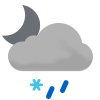

Weather
Germersheim 0.8-3.9
0.8-3.9

0.8-8.4 Wed

1.1-10.0 Thu

3.4-9.4 Fri

1.4-5.6 Sat

0.9-4.2 Sun

0.3-4.2 Mon

-2.8-6.8 Tue

8.1-12.1 Wed

4.6-7.5 Thu
Erlabrunn -1.2-1.7
-1.2-1.7

0.9-4.6 Wed

2.4-4.9 Thu

1.3-4.3 Fri

-0.6-0.5 Sat

-3.0-0.4 Sun

-5.3--2.6 Mon

-4.5--1.9 Tue

1.8-5.3 Wed

0.6-2.0 Thu
Schmilka 1.6-5.2
1.6-5.2

1.6-4.9 Wed

-0.1-3.6 Thu

1.4-6.0 Fri

-3.2-3.1 Sat

0.2-2.0 Sun

-7.6-0.3 Mon

-2.3-0.5 Tue

0.8-7.6 Wed

3.1-4.8 Thu